Q: OpenDRIVE の核心的な定義は何ですか？
A: OpenDRIVE は、自動運転シミュレーションにおける静的な道路ネットワークを記述するための業界標準です。シミュレーション環境に対して、統一された構造化道路データ交換フォーマットを提供します。
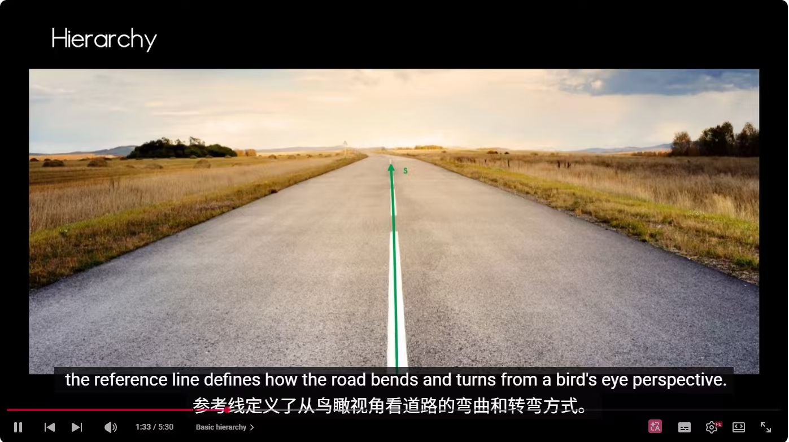
Q: 基準線 (Reference Line) は OpenDRIVE でどのような役割を果たしますか？
A: 基準線は OpenDRIVE の幾何学的基礎です。道路の中心線を定義することで、鳥瞰図（Bird's Eye View）の視点から道路の湾曲、カーブ、方向を正確に記述し、その後の車線区分や環境モデリングのための座標基準を提供します。
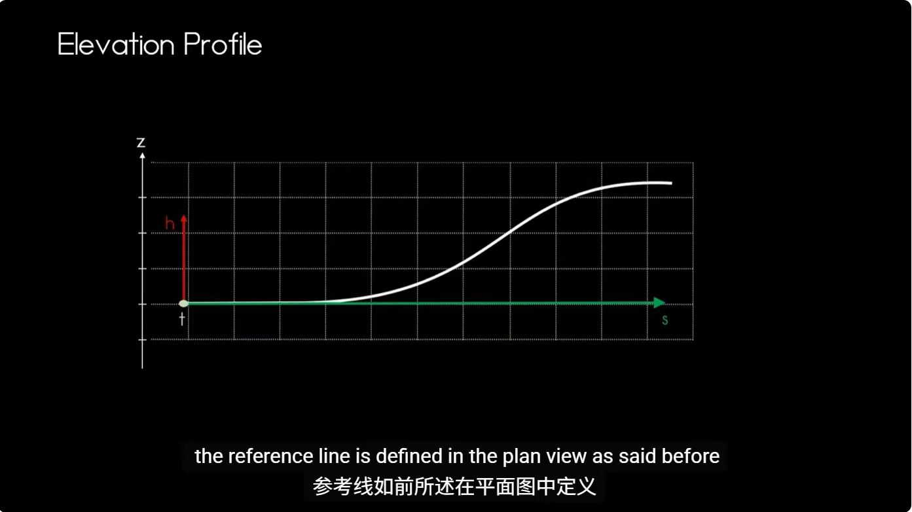
Q: 標高断面 (Elevation Profile) とは何であり、OpenDRIVE ではどのように定義されますか？
A: 標高断面は道路の垂直的な幾何学的特徴を定義します。平面図で定義された基準線（座標 s）に基づき、その地点における高さの変化（座標 z）を関数として記述します。この図は、$s$ 方向に対して、道路の延長に伴う高さ $h$（つまり $z$ 値）の変化を示しており、道路の3次元的な幾何学的形状を完全に描写しています。
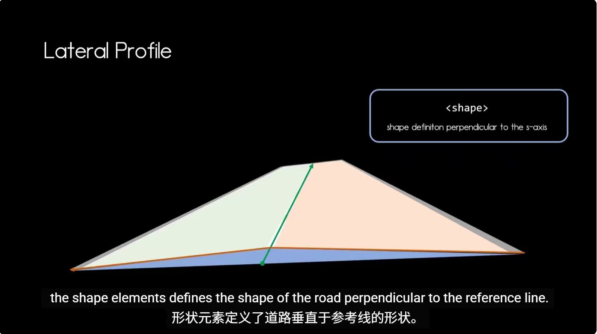
Q: 側面断面 (Lateral Profile) の定義は何ですか？
A: 側面断面は、基準線（s軸）に垂直な断面の形状を定義します。この図は、「形状要素 (shape elements)」が横方向の幾何学的形状をどのように通じて、道路の横断勾配、カント（Superelevation）、または路肩の傾斜を正確に描写し、道路表面の精緻な3Dモデリングを実現しているかを示しています。
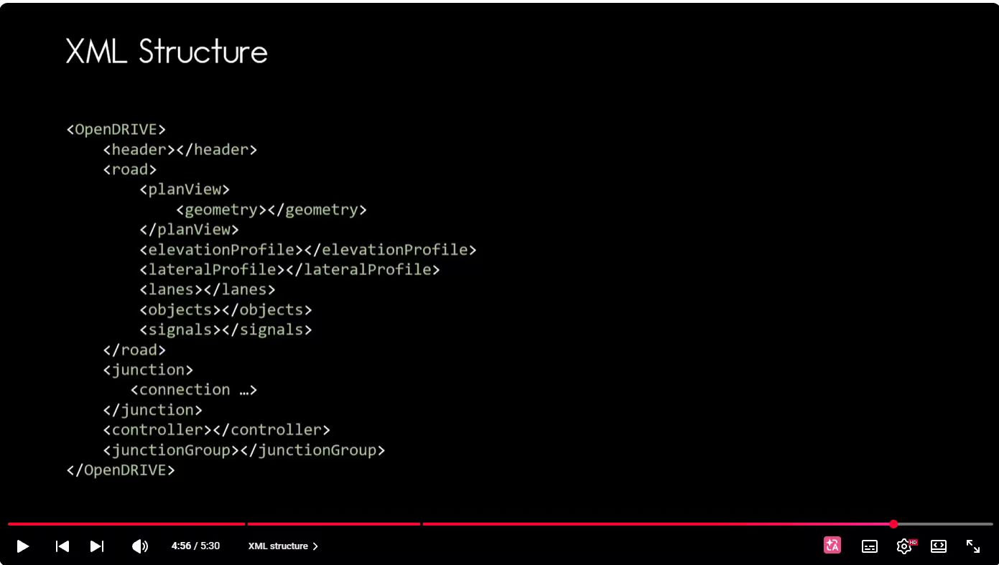
Q: OpenDRIVE の XML 組織構造はどのようになっていますか？
A: OpenDRIVE は階層化された明確な XML 構造を採用しており、<OpenDRIVE> をルートノードとして、主に以下を含みます。
1. Road レベル: planView (平面)、elevationProfile (標高)、lateralProfile (側面)、ならびに車線、物体、標識などの論理定義。
2. Junction レベル: connection を介して交差点の接続関係を定義。
3. 補助レベル: controller (コントローラ) と junctionGroup (交差点グループ) が組み合わさることで、完全な道路ネットワークトポロジーを構成します。
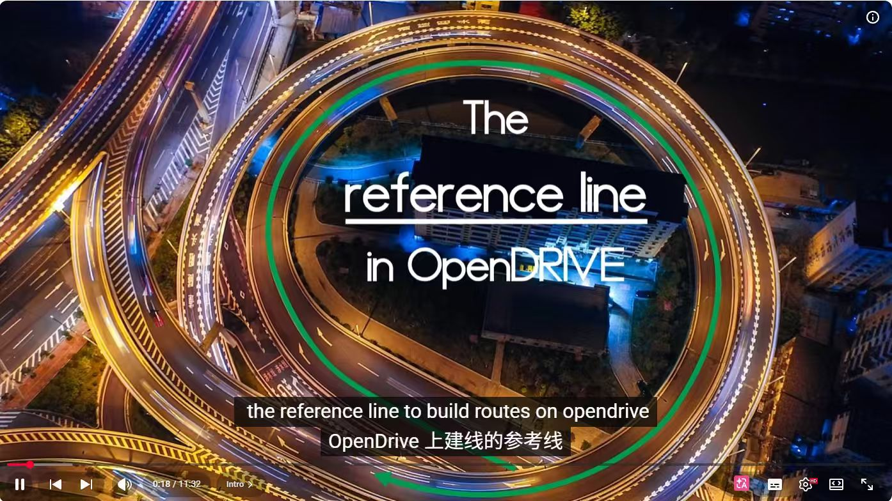
Q: OpenDRIVE で基準線を利用してルーティングを構築するにはどうすればよいですか？
A: 図に示すように、OpenDRIVE は高精度の基準線（Reference Line、図中の環状道路の中心線）を定義することで、複雑な交差点やランプ構造において車両に経路指針を提供します。この基準線は、車両の走行軌跡の構築、車線の接続関係の定義、および自動運転経路計画を実現するための核となる論理的基盤です。
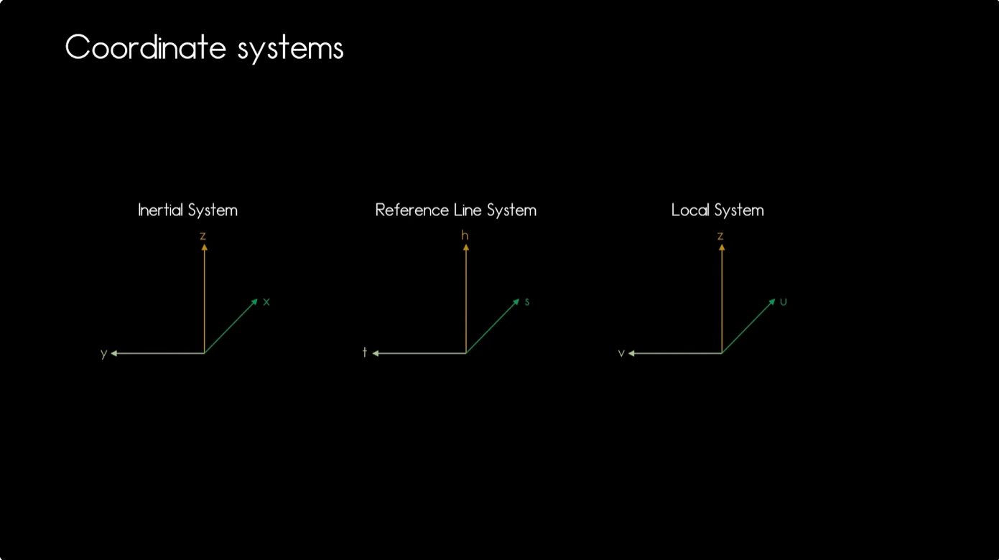
Q: OpenDRIVE で定義されている3つの主要な座標系とその役割は何ですか？
A: 正確な道路トポロジーモデリングを実現するために、OpenDRIVE は3層の座標系構造を定義しています。
1. Inertial System (慣性座標系): (x, y, z) に基づき、グローバルな空間位置を提供。
2. Reference Line System (基準線座標系): (s, t, h) に基づき、道路中心線を基準として道路に沿った幾何学的特性を記述。
3. Local System (局所座標系): (u, v, z) に基づき、特定の物体や領域の局所空間特性を記述。これら3つが組み合わさることで、グローバルから局所までを網羅する完備された空間記述体系を構成しています。
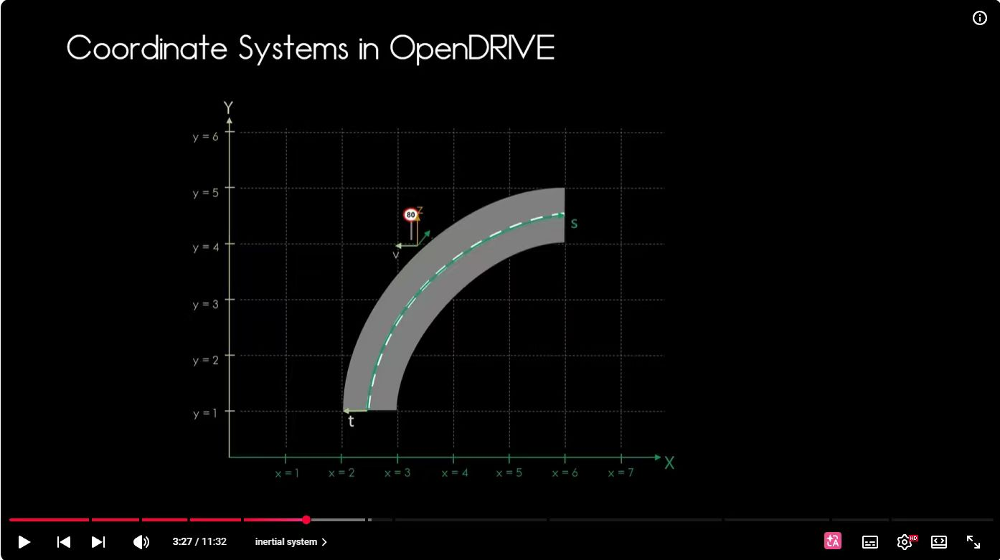
Q: この図は慣性座標系 (Inertial System) をどのように直感的に説明していますか？
A: 図に示すように、慣性座標系は OpenDRIVE におけるグローバル基準であり、X-Y 直角座標系（2次元平面）を採用しています。グリッド目盛りを通じて、道路ネットワーク（例えば灰色のカーブ領域）が2次元空間内のどこに絶対位置しているかを明確に示しており、OpenDRIVE 内のすべての道路、交差点、物体を定義するための統一されたグローバル位置参照を提供しています。
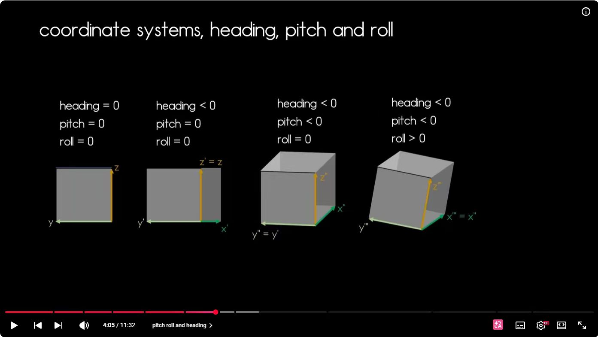
Q: OpenDRIVE では物体の空間姿勢をどのように記述しますか？
A: OpenDRIVE は3つの回転次元を使用して物体の姿勢を正確に記述します。
1. Heading (ヘディング角/偏揺角): Z軸周りの回転。水平面内での方位を記述。
2. Pitch (ピッチ角/縦揺角): Y軸周りの回転。水平面に対する上下の傾きを記述。
3. Roll (ロール角/横揺角): X軸周りの回転。物体の左右の傾きを記述。
この図は、立方体の空間姿勢がパラメータの組み合わせによって変化する様子を4段階で示しており、物体が道路の3次元空間内でどのように位置決め・配置されるかを理解するための基礎となります。
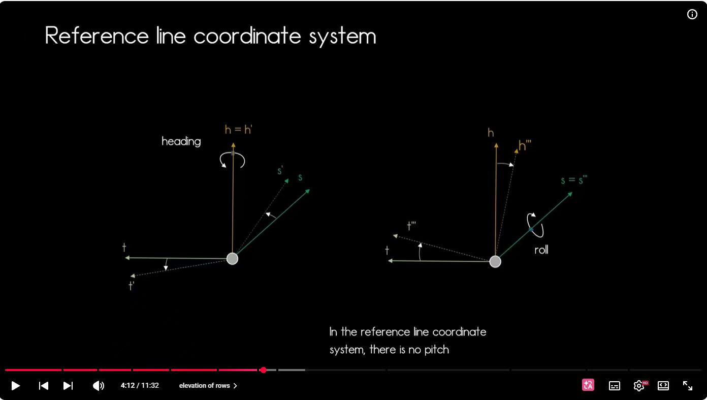
Q: 基準線座標系において、その幾何学的特性をどのように記述しますか？
A: 基準線座標系（s, t, h）は、道路の3次元幾何学を正確に記述するために使用されます。
1. Heading (ヘディング角): s-t 平面上で定義され、基準線の方向性に影響を与えます。
2. Roll (ロール角): 道路の横方向の傾斜を定義し、h 軸のオフセットとして表現されます。
3. 重要な制約: OpenDRIVE の基準線座標系体系では、明確に "there is no pitch" と定義されています。つまり、その局所座標系内ではピッチの変化は考慮されず、局所的な道路幾何学の記述論理が簡略化されています。
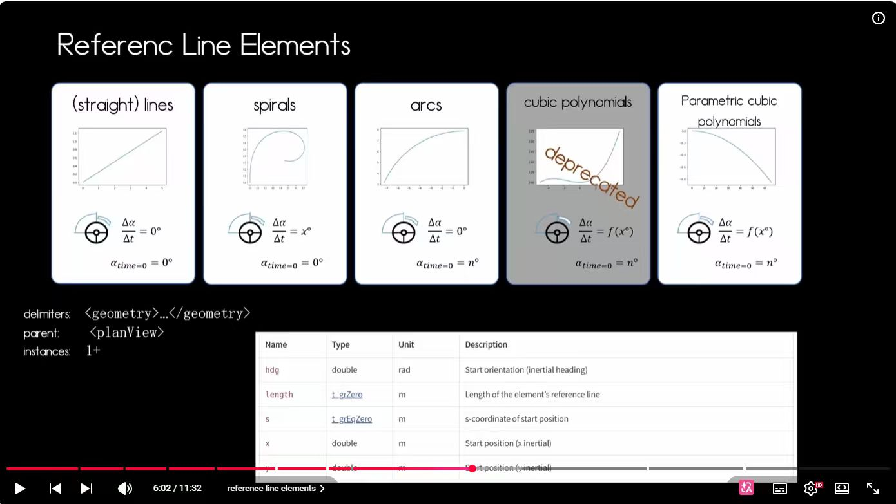
Q: OpenDRIVE の基準線にはどのような幾何学的定義要素が含まれていますか？
A: 幾何要素は <geometry> タグを通じて定義され、<planView> の核となります。
1. 基本タイプ: 直線 (lines)、螺旋線 (spirals)、円弧 (arcs)、ならびにパラメータ化三次多項式 (parametric cubic polynomials) が含まれます。
2. 非推奨通知: 通常の「三次多項式 (cubic polynomials)」は非推奨 (deprecated) としてマークされています。
3. 重要なパラメータ: すべての要素は、始点位置 (x, y)、始点方向 (hdg)、長さ (length)、および s 座標によって定義され、これらが組み合わさって道路の平面的な幾何学的方向を形作ります。
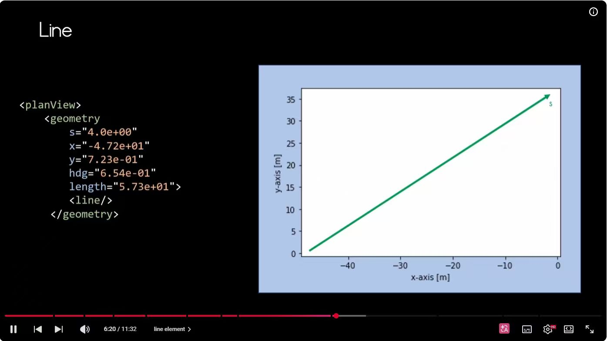
Q: OpenDRIVE で XML を通じて直線道路を定義するにはどうすればよいですか？
A: 直線は OpenDRIVE において最も基本的な幾何要素であり、<line/> タグで明示的に識別されます。図に示すように、定義には以下のパラメータが必要です。
1. 始点座標 (x, y): 慣性座標系における直線の開始位置。
2. 始点方向 (hdg): 直線が伸びる方向の角度（ラジアン単位）。
3. 長さ (length): 直線セグメントの幾何学的総延長。
4. s 座標: 基準線体系内における始点位置のオフセット量。これらのパラメータは、グローバル座標系下における直線セグメントの正確な空間レイアウトを保証します。
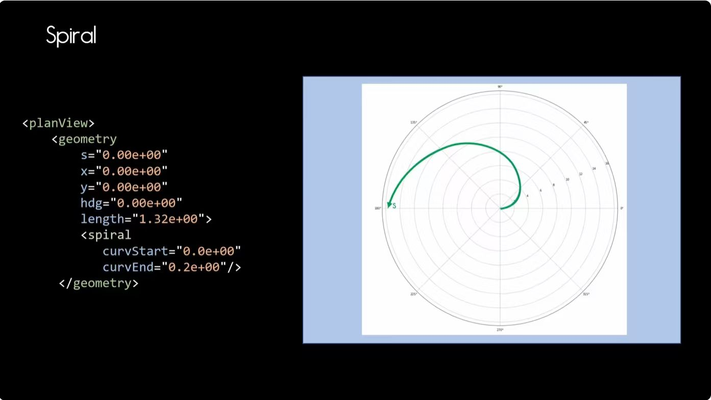
Q: OpenDRIVE において螺旋線 (Spiral) はどのように記述されますか？
A: 螺旋線は、曲率が走行距離に応じて滑らかに変化する幾何学的道路セグメントを表現するために使用され、<spiral/> タグで定義されます。
1. 核となる属性: 始点曲率 (curvStart) と終点曲率 (curvEnd) を定義し、滑らかなカーブ遷移を実現します。
2. 極座標表示: 図のように、極座標平面において曲率が線形に増加する螺旋軌跡を示し、始点から滑らかに伸びます。
3. 重要な適用: 螺旋線は直線と円弧、または二つの円弧を接続するための重要な遷移区間であり、自動運転車両の走行快適性と経路計画の滑らかさを向上させるために極めて重要です。
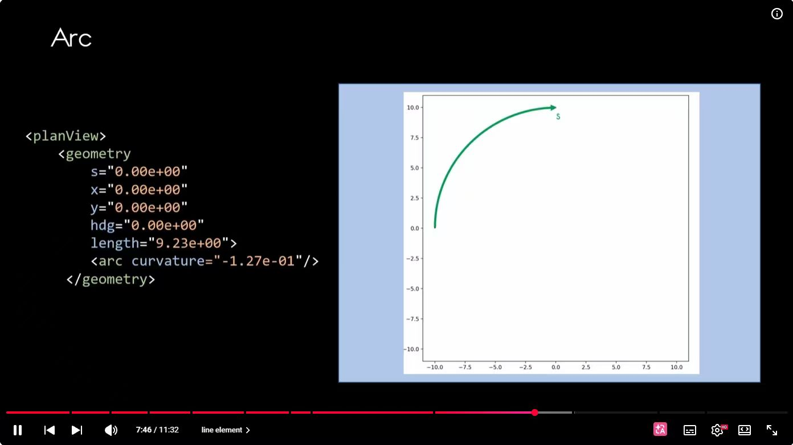
Q: OpenDRIVE で円弧 (Arc) を定義するにはどうすればよいですか？
A: 円弧は一定の曲率を持つカーブを表し、<arc/> タグで定義されます。
1. 核となる属性: curvature パラメータ（図の例では負の値であり、時計回りの方向転換を示す）を設定し、円弧の湾曲度を定義します。
2. 幾何学的可視化: 図に示すように、円弧は平面図において一定の湾曲軌跡を示し、道路のカーブセクションを構築するための基礎となります。
3. 重要なパラメータ: 他の幾何要素と同様に、円弧も始点 (x, y)、始点方向 (hdg)、長さ (length) を指定する必要があり、これらが組み合わさって道路の滑らかなカーブの正確な空間記述を実現します。
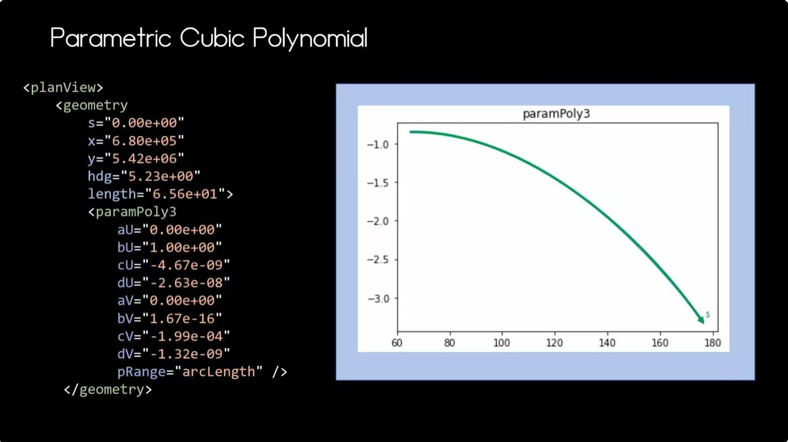
Q: Parametric Cubic Polynomial とは何であり、どのように定義されますか？
A: パラメータ化三次多項式は <paramPoly3> タグを通じて定義され、より複雑な幾何学的形状を記述するために使用されます。
1. 論理構成: $U$ および $V$ の二方向に対する多項式係数（$aU, bU, cU, dU$ および $aV, bV, cV, dV$）を通じて曲線軌跡を定義します。
2. 範囲パラメータ: prange="arcLength" 属性を通じて、多項式が円弧長パラメータに基づいて計算されることを指定します。
3. 可視化特性: 図に示すように、このモデルは柔軟な湾曲軌跡を生成可能であり、係数の精密な設定により、標準的な基礎要素（直線、円弧）では記述が困難な複雑な道路幾何学モデリングのニーズに対応します。
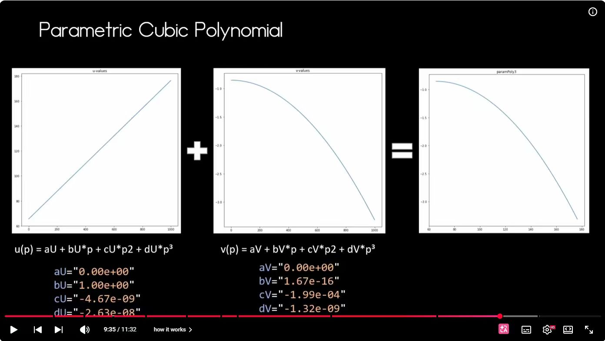
Q: なぜパラメータ化多項式を U と V の二方向に分割する必要があるのですか？
A: 曲線が独立した U と V のパラメータ成分（それぞれが独立した三次多項式）に分解されることで、OpenDRIVE は複雑な曲線軌跡の効果的な分離を実現しています。
1. 加法による重ね合わせ: 図では U 成分曲線と V 成分曲線が加算論理で組み合わさり、最終的な paramPoly3 軌跡を合成する様子が明確に示されています。
2. 係数モデリング: 各成分は独立した $a, b, c, d$ 係数によって制御されており、開発者は限られた8つのパラメータを調整することで、空間内における曲線の湾曲特性や延伸経路を精密に制御できます。
3. 柔軟性: このような処理方式は、XML 構造を簡潔に保ちながら、非標準的な道路幾何学的構造に対するモデリングの自由度を最大限に引き出しています。
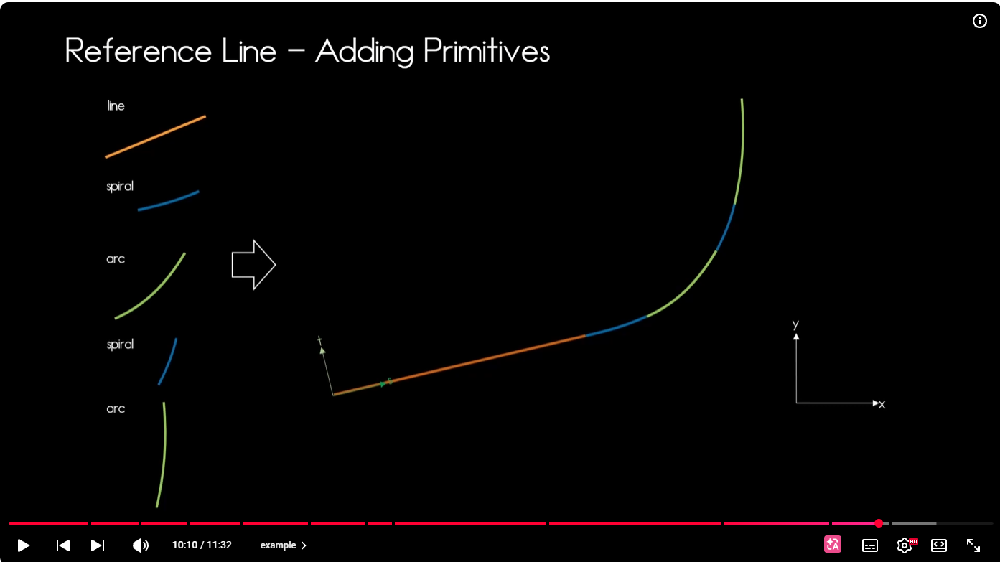
Q: 複雑な道路はどのようにして基本幾何要素の重ね合わせで構築されますか？
A: OpenDRIVE はモジュール式のモデリング手法を採用しており、複数の「幾何学的プリミティブ (Geometric Primitives)」を順次接続することで、複雑な道路基準線を構築します。
1. 重ね合わせ論理: 図に示すように、システムは line -> spiral -> arc -> spiral -> arc といった基本要素を順次接続し、段階的に滑らかな幾何学的軌跡を形成します。
2. 滑らかな遷移: 直線と円弧の間に螺旋線 (spiral) を用いることで、曲率の遷移を提供し、道路全体の幾何学的滑らかさを確保しています。
3. 構築プロセス: このようなインクリメンタル（逐次）な構築手法により、OpenDRIVE は効率的に基本要素を再利用し、あらゆる複雑な道路幾何モデルを迅速に生成可能です。
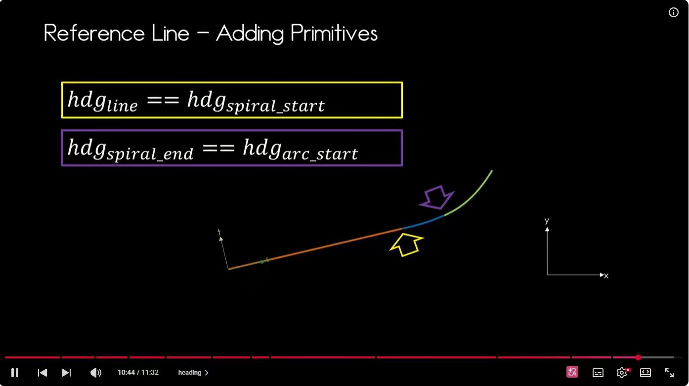
Q: 幾何要素の接続時に、なぜ特定の Heading 制約を満たす必要があるのですか？
A: OpenDRIVE において、基準線の幾何学的な滑らかさ（すなわち G1 連続性）を保証するために、各幾何要素間の接続は方向 (Heading) の整合制約を満たす必要があります。
1. 接続論理: 図では hdg_line == hdg_spiral_start および hdg_spiral_end == hdg_arc_start という数式を通じて、隣接する要素の交点における接線方向が完全に一致しなければならないという規定を設けています。
2. 物理的な意味: このような制約は、車両が道路の幾何学的な変曲点を通過する際に激しい方向の急変を起こさないことを保証し、走行軌跡の滑らかさと連続性を担保します。
3. 構築要件: すべての隣接する geometry 要素（直線、螺旋線、円弧など）は、この Heading 整合の法則を厳格に遵守しなければなりません。
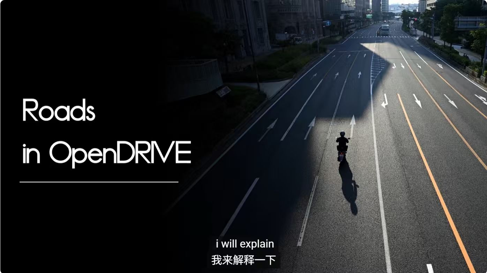
Q: OpenDRIVE フレームワーク内で「Road」の概念をどのように定義・組織しますか？
A: 「Road」は OpenDRIVE ネットワーク内において最も核となる論理ユニットです。
1. 基本的な定義: ひとつの「Road」は、連続的な属性を持つ道路区間を代表し、論理的には指定された基準線 (Reference Line) に紐付けられています。
2. 空間属性: すべての車線 (Lanes)、道路標示、信号、および路側の物体は、その Road 基準線に依存する子要素です。
3. シーンの意味論: 現実の物理的な道路セグメントを論理的な Road オブジェクトにマッピングすることで、OpenDRIVE は複数車線からなる複雑な交通シーンの抽象化と構造的な記述を実現し、シミュレーションエンジンが効率的に衝突検知や経路計画を行うことを可能にします。
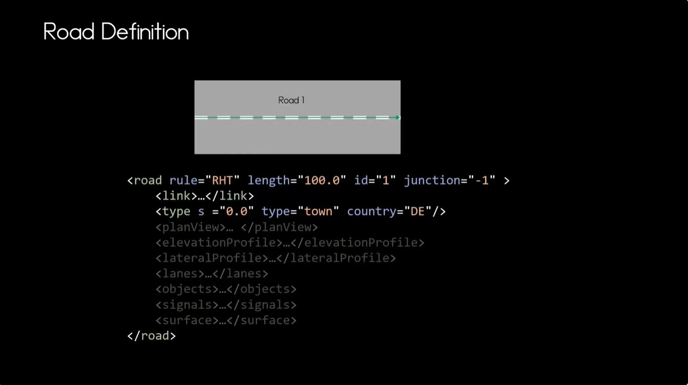
Q: 典型的な OpenDRIVE Road XML 定義には、どのようなコア属性とノードが含まれますか？
A: 図に示すように、典型的な <road> タグは物理道路を完全に定義しています。
1. 属性情報: rule="RHT" (右側通行規則)、length="100.0"、ならびに id と junction (交差点関連付け) 属性を含みます。
2. コアノード: link (トポロジー接続)、type (道路タイプ/国)、planView (幾何学)、elevationProfile (標高)、lateralProfile (側面)、ならびに lanes (車線)、objects (物体)、signals (信号)、surface (路面) などの子タグを含み、道路の物理的および論理的な属性のすべてを明確にカプセル化しています。
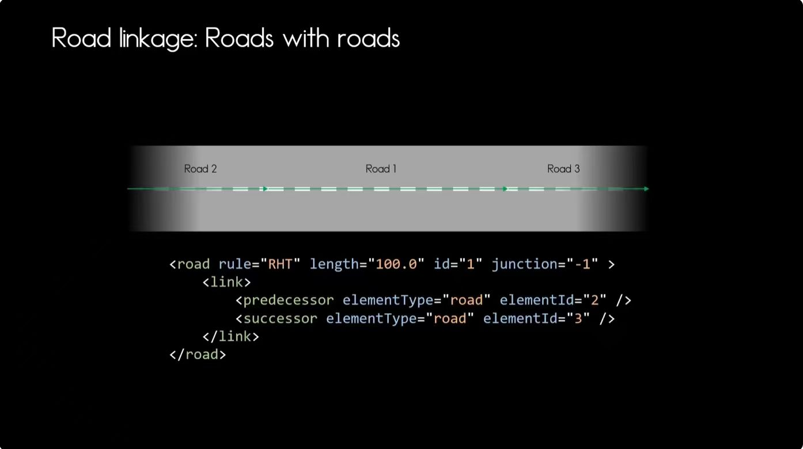
Q: OpenDRIVE ではどのように Road と Road 間の論理的な接続を実現していますか？
A: 図に示すように、OpenDRIVE は <link> タグを通じて道路間の接続関係を定義します。
1. トポロジーシーケンス: predecessor (前駆) および successor (後継) 要素を定義することで、Road 1 と Road 2、Road 3 の間に線形接続論理を構築します。
2. 接続属性: 接続オブジェクトのタイプ (elementType="road") と、対応する唯一の識別 ID (elementId) を明示し、論理的に異なる物理的な道路区間をつなぎ合わせています。
3. 構築の価値: この ID インデックスベースの接続方式により、シミュレーションシステムは一貫性のある道路網トポロジーを自動構築でき、自動運転車両のナビゲーションや経路計画に対して明確なトポロジー的サポートを提供しています。
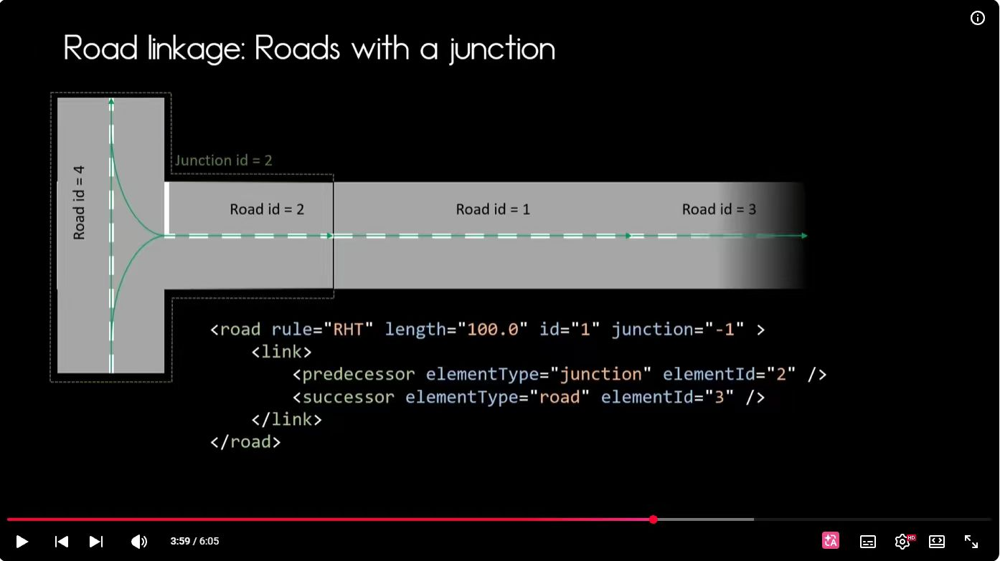
Q: 交差点 (Junction) を含むシーンにおいて、Road はどのように定義されますか？
A: 図に示すように、道路が交差点に接続する場合、OpenDRIVE はより複雑なリンク定義を採用しています。
1. 交差点バインディング: XML 定義において、Road 1 の predecessor タイプは elementType="junction" と明示され、特定の elementId="2" (Junction ID) を指しており、その道路が交差点エリアに接続していることを示します。
2. 接続トポロジー: この設計は、単一の道路から複数の道路へ分岐する複雑な交差点シーンを効果的に処理し、シミュレーション環境が交差点から特定の道路へ流れる経路を認識・計算できることを保証します。
3. 構築の価値: このスキームは、OpenDRIVE がマルチパス、交差点交通流、および複雑な道路網トポロジーの記述をサポートするためのコアメカニズムです。
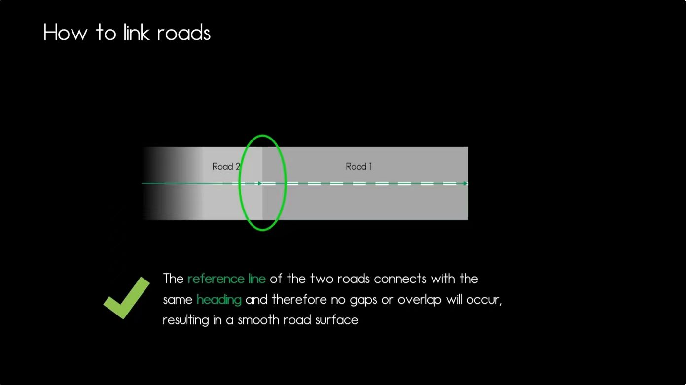
Q: なぜ道路接続部で Heading を一致させなければならないのですか？
A: 図に示すように、OpenDRIVE は隣接する道路（Road 1 と Road 2 など）の基準線が、接続点において同一の Heading（ヘディング角/偏揺角）を持つことを要求します。
1. 滑らかな表面の保証: 2つの基準線が切線方向 (Heading) を完全に一致させることで、路面接続部における隙間 (gaps) や重なり (overlap) の発生を効果的に回避できます。
2. 物理的な滑らかさ: このような厳格な幾何学的配置規則は、道路表面が論理的および物理的なレベルの両方で滑らかに連続することを保証しており、自動運転シミュレーションモデルにおける走行体験と物理シミュレーションの精度を担保するための基本的な前提条件です。
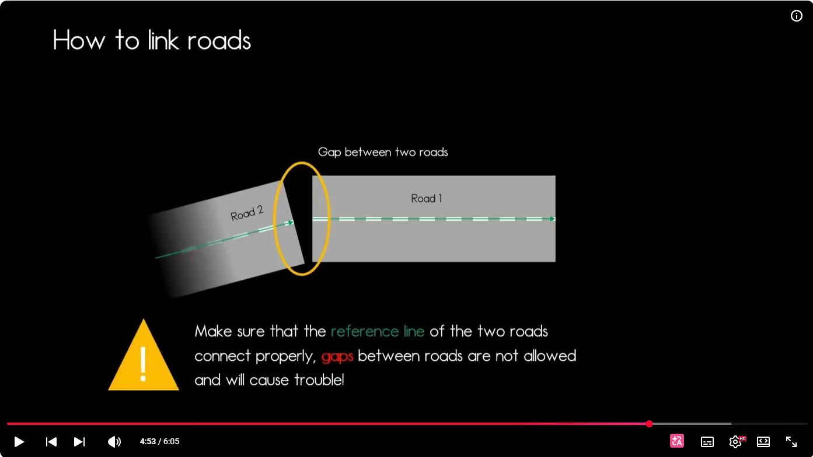
Q: なぜ OpenDRIVE では、道路接続部に隙間 (Gaps) が存在することが厳格に禁止されているのですか？
A: 図のように、Road 1 と Road 2 の間に一致しない隙間が生じると、深刻なシミュレーション上の問題を引き起こします。
1. シミュレーション異常: 隙間は車両が接続部に達した際に、力学的な異常、衝突検知の失敗、または軌跡のロストを引き起こします。
2. 物理的な不連続性: OpenDRIVE は、2つの道路の基準線が正確に接合されることを強制しており、シミュレーション道路網の連続性を確保するために、いかなる形式の断裂も禁止しています。
3. 構築の注意: 正しく接続されていない道路セグメントは、深刻なシミュレーションレンダリングエラーと論理処理障害を引き起こすため、信頼性の高い道路網トポロジーを構築する際に回避しなければならないコアエラーです。
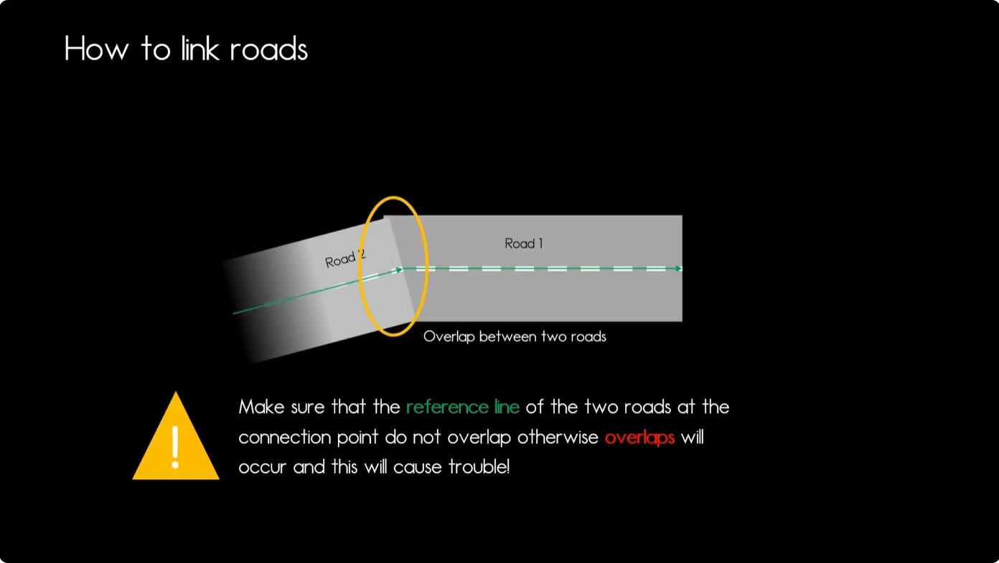
Q: なぜ OpenDRIVE では、道路接続部に重なり (Overlaps) が発生することが厳格に禁止されているのですか？
A: 図のように、Road 1 と Road 2 の接続部に重なり部分が存在すると、道路網の論理構造を直接破壊することになります。
1. シミュレーション異常: 幾何学的な重なりは、路面モデルのレンダリングにおけるジッター (Z-fighting)、衝突検知論理の失敗、および車両位置特定のエラーを引き起こします。
2. 接続仕様: OpenDRIVE は、2つの道路の基準線が接続点で正確に一致することを明確に要求しており、接続点を超えた追加の冗長部分の存在を禁止しています。
3. 構築の注意: 重なり接続は深刻なモデリングエラーであるだけでなく、複雑なルーティング計算やトポロジー構築論理を麻痺させるため、回避しなければならないもう一つの構築における底線です。
Q: なぜ OpenDRIVE ファイルの開発にオープンソースソフトウェアを利用することが推奨されるのですか？
A: 図のように、オープンソースソフトウェアに基づいて OpenDRIVE を構築することは、現在の自動運転シミュレーション分野における主流の開発ルートです。
1. ハードルの低減: オープンソースツールチェーンは、高精度地図制作および道路網トポロジーモデリングの商用コストを大幅に引き下げます。
2. エコシステムの柔軟性: オープンソースコミュニティは、変換、可視化、検証のための豊富なツールを提供しており、開発者が複雑な道路網論理を迅速に反復できる環境を実現します。
3. 一般的な互換性: オープンソースツールを利用して生成された OpenDRIVE ファイルは、良好なクロスプラットフォーム互換性を備えており、様々なオープンソース（CARLA など）や商用シミュレーション環境にシームレスに統合できるため、シミュレーションデータパイプラインの自動化を実現するための重要な戦略です。
Q: OpenDRIVE ファイルを作成および閲覧するために、どのようなツールを準備する必要がありますか？
A: OpenDRIVE 道路網ファイルを効率的に開発するための、推奨される主要なツールチェーンは以下の通りです。
1. コードエディタ: VS Code を推奨します。XML のハイライトやプラグイン拡張に対応しており、OpenDRIVE のソースコードを記述するための第一選択肢です。
2. シミュレーションおよびビューア: esmini。軽量かつ高性能な OpenSCENARIO/OpenDRIVE プレイヤーであり、道路網を直接レンダリングしてシナリオインタラクションをサポートします。
3. 補助開発環境: Python。道路網トポロジーを自動生成するスクリプトを書くため、あるいは複雑な OpenDRIVE データ構造を二次処理・検証するための Python ライブラリを活用します。
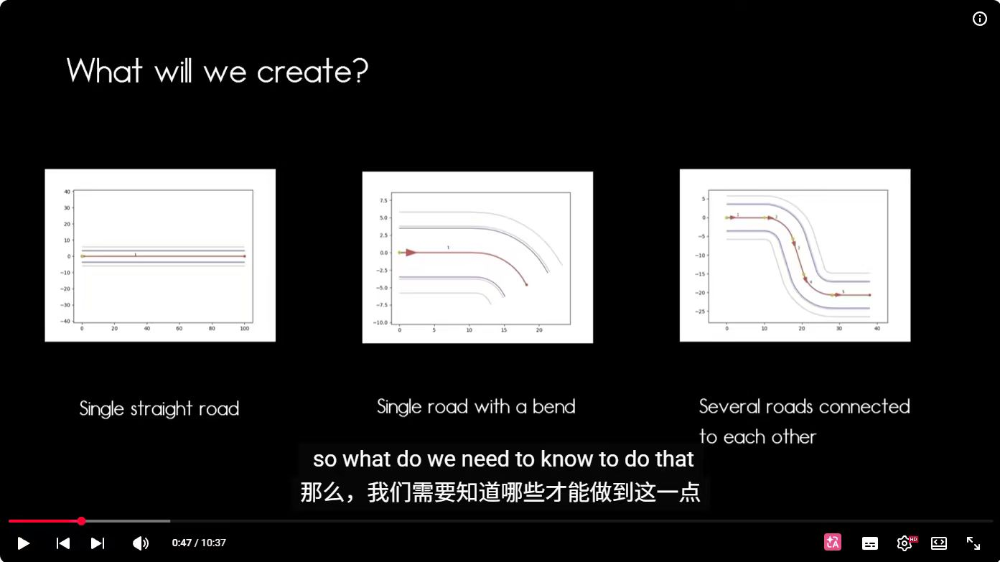
Q: OpenDRIVE 道路網の構築には、通常どのような3つの基本形式が関わりますか？
A: 図のように、OpenDRIVE 道路網の構築は、単純から複雑へ進化する論理に従います。
1. 単一直線道路 (Single straight road): 最も基本的な道路セグメント。方向転換のない真っ直ぐな道路の幾何学を定義するために使用。
2. カーブ付きの単一道路 (Single road with a bend): 直線、円弧、および遷移曲線（螺旋線など）を組み合わせることで、曲がった形態の道路を構築。
3. 相互接続された複数の道路 (Several roads connected to each other): 前駆/後継トポロジー関係（Linkage）を定義することで、複数の道路を直列につなぎ合わせ複雑な道路網を形成する。これは現実の都市道路シミュレーションを実現するための究極の目標です。
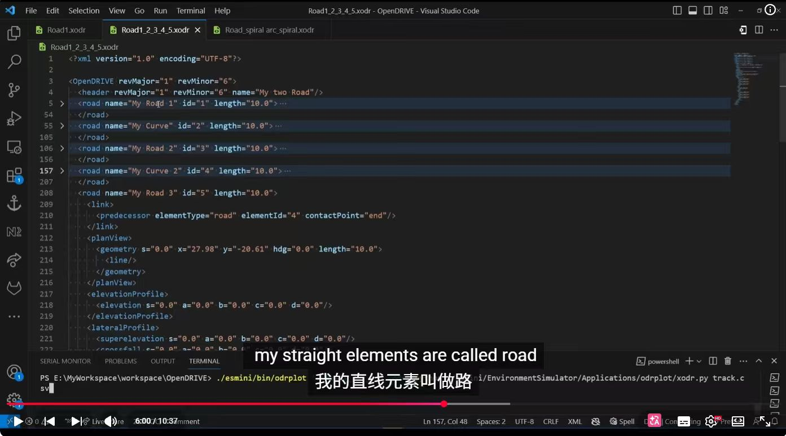
Q: OpenDRIVE XML において、「道路」 (Road) と「幾何要素」 (Geometry) はどのような関係ですか？
A: 図のように、OpenDRIVE は明確な意味論的なマッピング論理を採用しています。
1. 論理階層: 各物理道路セグメントは一つの <road> ノードとして定義され、そのセグメントの形状特性は、その内部に含まれる <planView> -> <geometry> 要素（<line/> など）によって具体的に記述されます。
2. 要素の所属: 簡単に言えば、直線の幾何学プリミティブは Road 論理ユニット内にカプセル化されており、すなわち「直線道路は一つの Road である」となります。
3. 端末検証: 図は odrplot ツールを使用して、コマンドラインから生成された `.xodr` 道路網ファイルを直接可視化レンダリングするプロセスを示しています。これは道路の XML 論理と物理幾何学が一致しているかを確認するための重要な開発プロセスです。
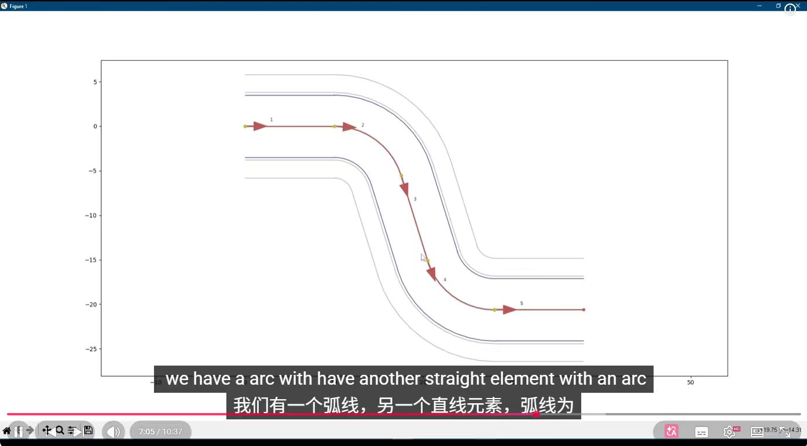
Q: 複雑な道路カーブシーンに直面したとき、OpenDRIVE はどのように幾何要素を組み合わせますか？
A: 図に示すように、OpenDRIVE は柔軟な幾何要素のシリアル化された組み合わせを通じて、複雑な道路カーブのトポロジーを構築可能です。
1. 組み合わせ論理: この道路モデルは「円弧 (arc) -> 直線 (straight element) -> 円弧 (arc)」というシーケンスによって構成されており、複数回のカーブ特性を持つ複雑なセグメントを完全に記述しています。
2. 継ぎ目の検証: このシリアル化設計は、OpenDRIVE が複数のカーブセグメントの銜え込みを処理する際の強力なモデリング能力を証明しており、複雑な幾何形態を標準化された基本プリミティブのシーケンスへと分解し、経路計画の滑らかさと予測可能性を保証しています。
3. 構築の価値: このような構造的な組み合わせ方式は、自動運転シミュレーションに高精度の空間軌跡記述を提供し、複雑なカーブシーンにおける車両ナビゲーション論理の一貫した実行を保証しています。
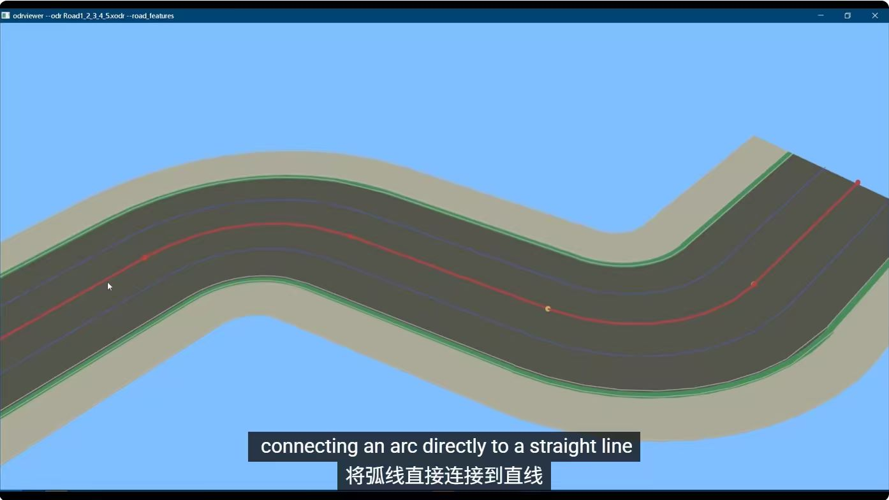
Q: OpenDRIVE で円弧 (Arc) を直線 (Straight Line) に直接接続することが推奨されない理由は何ですか？
A: 図に示すように、直接接続は幾何学的および走行力学的な急変を引き起こします。
1. 曲率の非連続性: 円弧は恒久的な曲率を持ちますが、直線の曲率は 0 であり、直接接続すると接続点において曲率が無限大のステップを生じます（つまり G1 または G2 の連続性が中断されます）。
2. 物理的な異常: このような急変は、車両が接続点を通過する際にステアリングホイールの瞬時の操作（すなわち角速度の急変）を必要とさせ、現実の自動運転では車両の不安定化や重大な走行不快感を引き起こします。
3. 構築の推奨: シミュレーションモデリングでは、曲率の連続的な変化を確保するために、常に両者の間に滑らかな遷移セグメントとして「螺旋線 (Spiral)」を挿入すべきです。
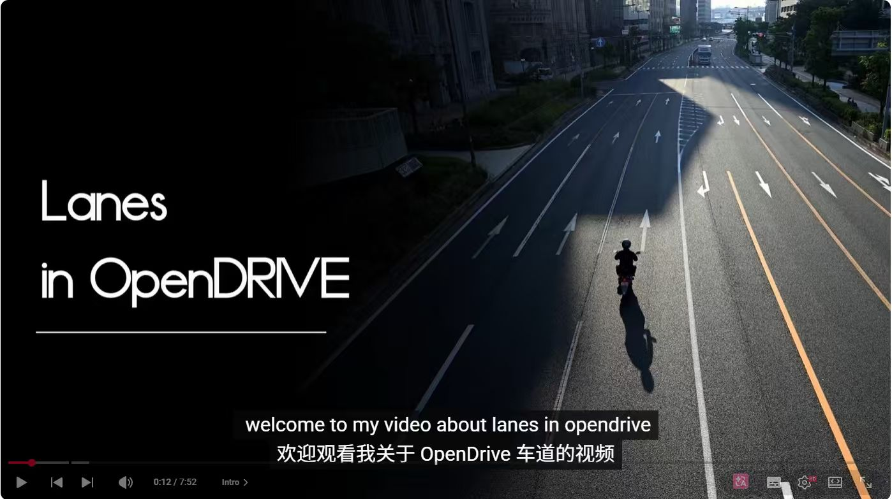
Q: なぜ OpenDRIVE において「車線 (Lanes)」は核となるモデリングコンポーネントなのですか？
A: 図に示すように、OpenDRIVE は道路ネットワークの核心を車線情報として抽象化しています。
1. 道路の抽象化: 現実の物理的な道路（図中の多車線都市セグメントなど）を論理化可能な車線シーケンスへと分解することで、OpenDRIVE は車両の走行経路に対する精緻な制御を実現しました。
2. 機能的価値: 車線定義には、空間幾何学的記述（幅、曲率など）だけでなく、走行論理（通行方向、制限速度、車線タイプなど）も含まれており、自動運転シミュレーションにおいて動的な車両運動予測と経路計画を行うための最も核となるデータソースです。
3. 構築の目標: 現実の道路の車線構造を正確に復元することは、シミュレーションシステムが高い忠実度で運転行動をシミュレーションするための前提条件です。
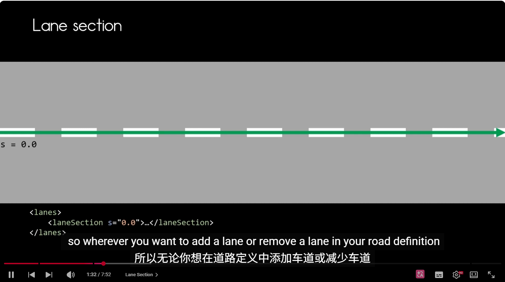
Q: OpenDRIVE において、「車線セクション (Lane Section)」はどのような役割を果たしますか？
A: 図に示すように、<laneSection> は OpenDRIVE が車線構造を動的に調整するための重要な論理コンポーネントです。
1. 時空間位置の定義: 開始座標 $s$ （図では s="0.0" と表示）を定義することで、車線構造の変化する論理的始点をマークします。
2. 動的な増減の実現: 道路の途中で補助車線を加える必要があっても、あるいは既存の車線を削除する場合でも、新しい laneSection を定義することで、車線数やレイアウトの変化を正確に制御できます。
3. 構築の価値: このメカニズムは、複雑で変更可能な車線トポロジーを構築するための標準化されたソリューションを提供し、シミュレーション過程における車線数の変化論理が滑らかに銜え込まれ、正確に計算されることを保証しています。
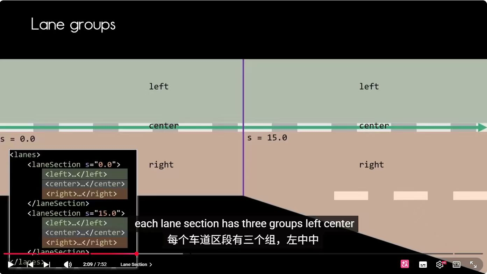
Q: OpenDRIVE において「車線グループ (Lane Groups)」はどのように分類されていますか？
A: 図に示すように、OpenDRIVE は各 laneSection を3つの機能的論理グループに分類します。
1. 中心グループ (Center): 基準線を含む車線。すべての車線幾何学的定義の論理的原点となります。
2. 左側グループ (Left) と右側グループ (Right): 基準線の両側の車線をそれぞれ含み、独立して交通流向と車線属性を定義します。
3. 構築論理: この Left-Center-Right の3グループ構成により、OpenDRIVE は複雑な複数車線の道路システムを明確かつ整理された方法で記述でき、シミュレーション環境が往復道路および様々な路肩や車線標示を処理する際の論理的な一貫性を保証しています。
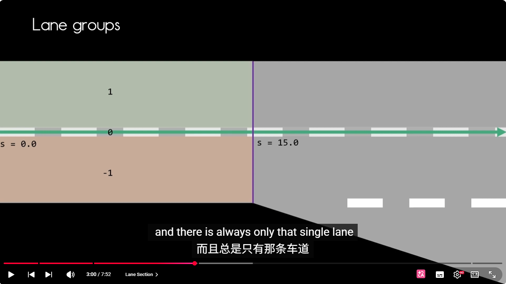
Q: OpenDRIVE における車線 (Lane) はどのようにインデックスおよび番号付けされますか？
A: 図に示すように、OpenDRIVE は基準線 (s-axis) を基準とした厳格な車線番号付けシステムを採用しています。
1. 中心車線 (0): 基準線がある車線は 0 号車線としてマークされます。
2. 左側車線 (正の数): 1 から開始して左に向かって増加します (1, 2, ...)。通常は左側の交通流に対応します。
3. 右側車線 (負の数): -1 から開始して右に向かって減少します (-1, -2, ...)。通常は右側の交通流に対応します。
4. 論理的意義: この基準線に基づいた ID 番号付けルールは、シミュレーションソフトウェアが車線特定、ルート探索アルゴリズム、および交通流制御を行うための唯一の論理的識別子です。
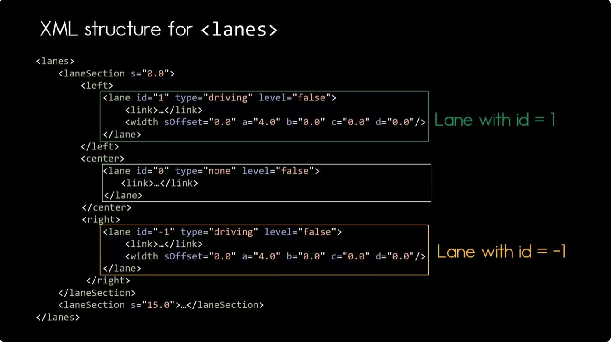
<lanes> XML 構造詳解Q: OpenDRIVE において <lanes> ノードの XML 構造は、どのように車線定義を組織していますか？
A: 図に示すように、<lanes> ノードは階層化された XML を用いて車線データを組織しています。
1. LaneSection 定義: laneSection (例えば s="0.0") を通じて道路を異なる論理区間に分割します。
2. Left-Center-Right 分割: 各区間内は明確に left (左)、center (中心)、right (右) の3つの論理車線グループに分割されています。
3. Lane 属性定義: グループ内で具体的な <lane> を定義し、id (インデックス)、type (通行タイプ、例えば driving)、width (多項式係数を含む) などの属性を含み、車線の幾何学的および機能的な基礎記述を構成しています。
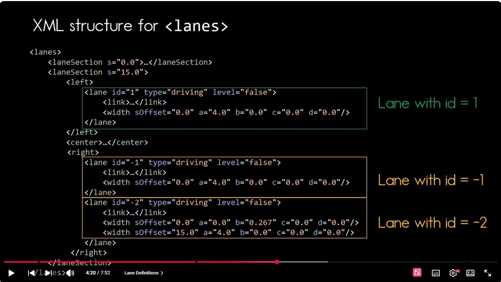
Q: XML コードは車線の幅と属性を具体的にどのように定義していますか？
A: 図のように、<lane> タグは正確に入れ子になった子ノードを通じて車線属性を定義しています。
1. 論理マッピング: 車線 ID (1, -1, -2) の分割を明確にし、id 属性を通じて基準線と関連付けています。
2. 幅の幾何学: <width> タグを通じて多項式係数 (a, b, c, d) を利用し、車線の幅を動的に記述します。例えば、id="-2" の車線は、複数の width パラメータ（それぞれが異なる sOffset に対応）を定義することで、幅が道路の延長に伴って動的に変化する効果を実現しています。
3. トポロジー参照: <link> 子タグを通じて、その車線の論理トポロジー上の接続関係を明確にしており、シミュレーションエンジンが車線レベルでの経路計画を行うための基盤となります。
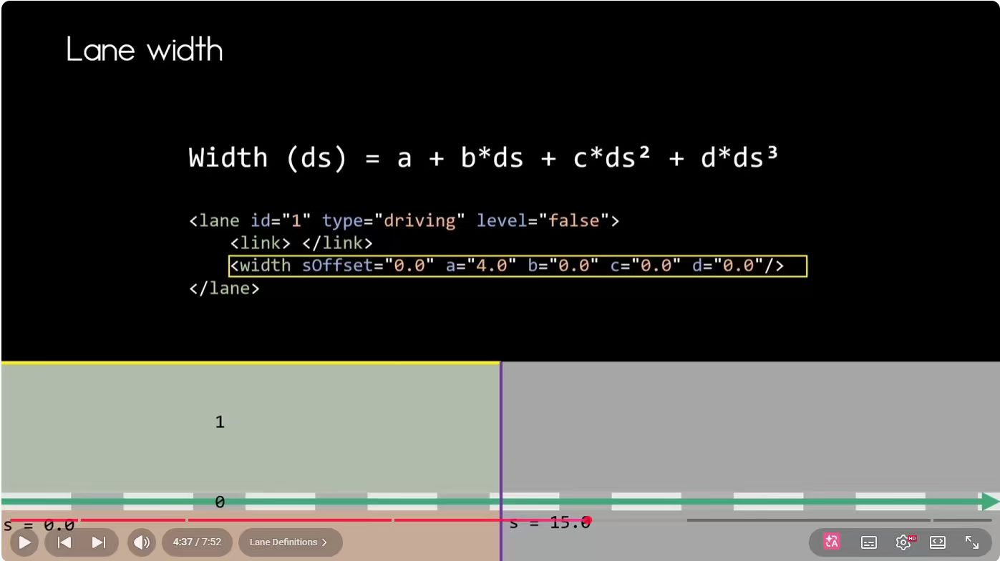
Q: OpenDRIVE は数学的関数を通じて車線幅をどのように定義しますか？
A: 図のように、車線幅は道路里程のオフセット量 $ds$ に関する三次多項式関数としてモデリングされます。
1. 多項式モデル: Width(ds) = a + b*ds + c*ds^2 + d*ds^3。
2. XML パラメータ設定: <width> ノード内の a, b, c, d の4つの係数を通じて、車線幅が $ds$ に応じてどのように変化するかを正確に制御します。
3. 物理的な直感性: 図の例では a="4.0" (恒久的に幅が 4m) と設定されており、このモデルがどのように $s=0.0$ から $s=15.0$ までの一定の 4 メートル幅を持つ車線を定義しているかを示しており、単純なものから複雑で動的な車線幅を記述する際の柔軟性を体現しています。
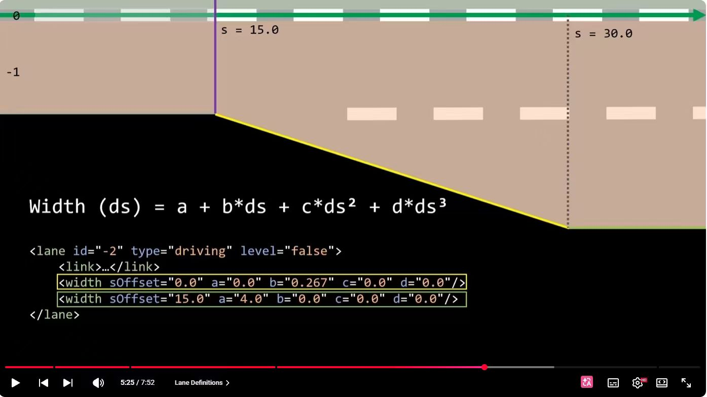
Q: 図のように、OpenDRIVE では車線幅の動的で滑らかな遷移をどのように実現していますか？
A: この図は、三次多項式を利用して幅が $s$ 座標（距離）に応じて滑らかに遷移するモデリングスキームをデモンストレーションしています。
1. 区間分割: $s=0.0$ から $s=15.0$ までの区間において、b="0.267" (線形増加係数) を設定することで、幅が 0 から 4 メートルへと滑らかに線形拡張する様子を実現しています。
2. 一定区間の遷移: $s=15.0$ において、a="4.0" に設定し、他の係数を 0 にすることで、車線幅を一定（4メートル）に転換しています。
3. 構築の価値: この里程オフセットに基づく多項式区間論理は、匝道（ランプ）の合流、補助車線の設置といった複雑な現実の幅変化シーンを正確かつ効率的に記述できるため、シミュレーション道路の高忠実度な構築を実現するための鍵となります。
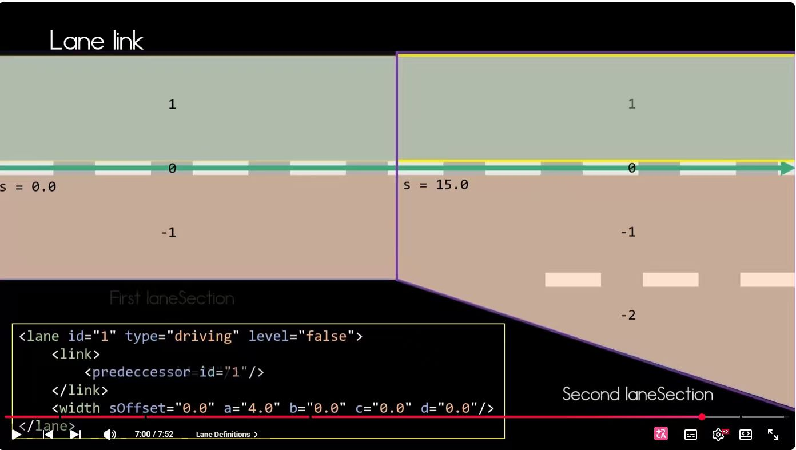
Q: OpenDRIVE は Lane Section を跨いだ車線論理接続をどのように実現しますか？
A: 図のように、s=15.0 の車線区間接続部において、OpenDRIVE は <link> 要素を通じて車線間の連続性を確立しています。
1. トポロジーインデックス: 子タグ <predecessor id="1"/> を通じて、次の区間の現在の車線が前の区間の 1 号車線から派生したものであることを明確にしています。
2. 接続の一貫性: 車線構造がどのように変化しようとも（例えば2車線から3車線になる場合など）、この明示的な ID マッピングメカニズムがシミュレーションシステム内における車線論理の連続性を保証します。
3. コア価値: この ID ベースの明示的な参照は、複雑な交差点や車線変更シーンにおいて、自動運転車両が正確に経路ナビゲーションと行動決定を行うための論理的基盤です。
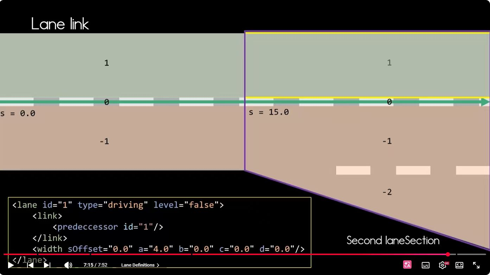
Q: この図は、Second Lane Section における車線数の動的な変化をどのように処理するかを示していますか？
A: 図のように、s=15.0 で Second Lane Section に入ると、トポロジーは動的に拡張されます。
1. 車線増加: 右側の車線グループは単一の -1 号車線から、-1 号車線と -2 号車線を含む構造へと拡張され、2車線から3車線への論理変更を見事に示しています。
2. 接続の継続: <lane id="1" ...><link><predecessor id="1"/></link></lane> を通じて、左側の 1 号車線が区間を跨いだ後の論理的連続性を確保しています。
3. 構築の実現: この XML 設定は元の車線の ID マッピングを維持するだけでなく、新たに <lane id="-2"/> を加えることで動的に道路網空間を構築しており、複雑な道路状況（合流ランプ、交差点の拡幅など）に対して完備された論理記述能力を提供しています。
Q: OpenDRIVE においてなぜ Junctions を特別に定義する必要があるのですか？
A: 図に示すように、交差点は道路網の中で最も複雑なトポロジーノードです。
1. トポロジーの合流: Junctions は論理的に複数の交差する道路を一つに接続し、複雑な交通流の分岐、合流、および方向転換のニーズを処理します。
2. 接続の抽象化: 通常道路の直接接続に比べ、Junctions はより高度な接続管理メカニズムを提供し、道路から別の道路へ流れる「接続関係 (Connections)」を正確に定義できます。
3. シミュレーションの核: これはシミュレーション環境において通行権計算、交通信号制御、および車両の行動決定を行うための核となる論理エンティティであり、複雑な空間シーンにおける複数車線道路網の連続的な走行を保証します。
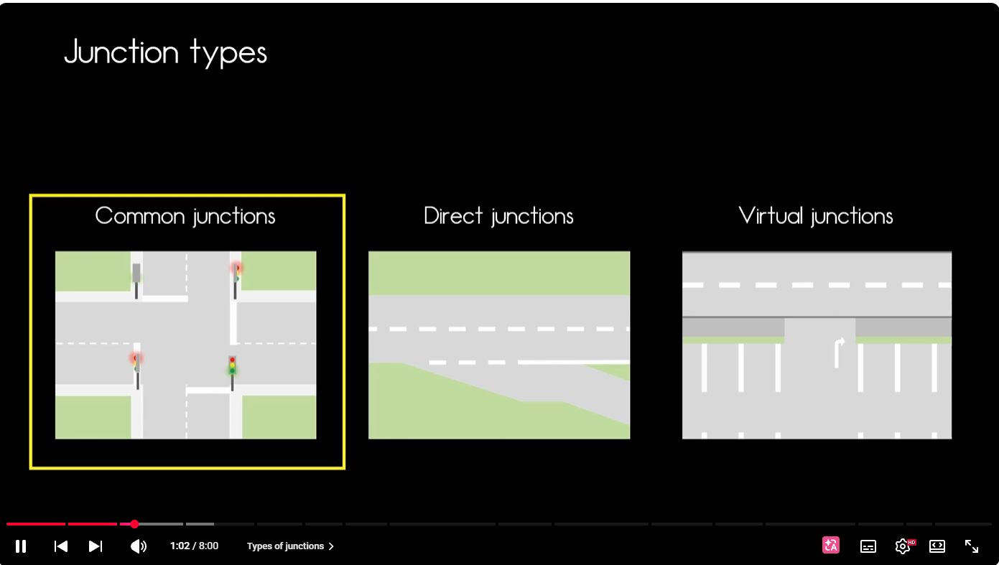
Q: OpenDRIVE には主にどのような3つの交差点 (Junction) タイプがありますか？
A: 図に示すように、OpenDRIVE は様々なシミュレーションニーズに合わせて、交差点 (Junction) を論理的に分類しています。
1. Common Junctions (一般交差点): 標準的な十字または丁字交差点。通常、交通信号灯を備えており、論理構造が複雑。多車線の合流や通行権管理を行う典型的な形式。
2. Direct Junctions (直接接続): 単純な合流や分離（ランプの合流など）に重点を置く。トポロジー論理は比較的平坦で、車線の滑らかな遷移に重点を置く。
3. Virtual Junctions (仮想交差点): 駐車場入口や側方出入口などの局所的なシーンをシミュレーション。論理的に主要道路と小エリアを接続しており、完全な交差点制御は不要。洗練された道路網の詳細を構築するための重要な補足。
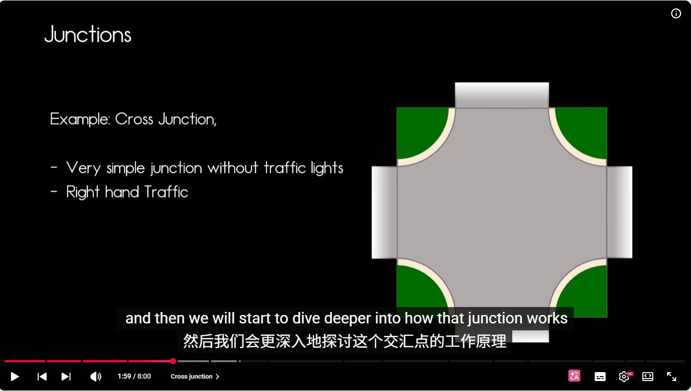
Q: この図は十字交差点モデリングのどの核となる要素を示していますか？
A: 図に示すように、OpenDRIVE は極めて簡素化された「十字交差点 (Cross Junction)」モデルを通じて、基本的な交差点トポロジーをデモンストレーションしています。
1. 信号制御なし: これは典型的な交通信号灯のない交差点であり、交差点トポロジー論理において通行権管理がいかに重要であるかを強調しています。
2. 右側通行ルール: 「Right hand Traffic」として明示的にマーキングされており、シミュレーションシステムに対して明確な交通流向の制約を提供しています。
3. 構築目的: この例は、最も単純な交差点形態を通じて、交差点内部の接続 (Connections) と交通論理がどのように OpenDRIVE 内でコード化され解析されるかを、開発者が深く理解できるようにすることを目的としています。
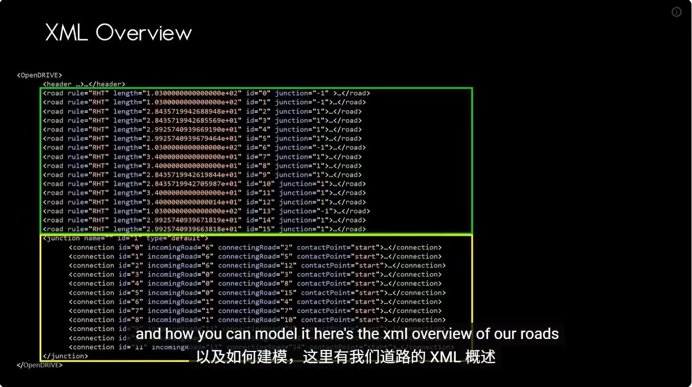
Q: XML において十字交差点全体の道路とトポロジー接続をどのように概観できますか？
A: 図に示すように、OpenDRIVE は構造化された XML を通じて、交差点内の複雑な道路網がどのようにモデリングされているかを明確に提示しています。
1. Road 集合 (上部の緑枠): 交差点に関与するすべての道路 ID を列挙し、junction="1" 属性を通じて同じ交差点 ID 下に論理的に集約しています。
2. Junction 定義 (下部の黄色枠): <junction> タグ内部の一連の <connection> 定義を通じて、各 incomingRoad (進入路) と connectingRoad (接続路) との間の物理的およびトポロジー的な対応関係を精密に構成しています。
3. 構築の価値: この明確な XML 概要は、開発者が道路網のトポロジーを検証し、故障を診断し、通行権を自動的に構成するための核となる参照基盤です。
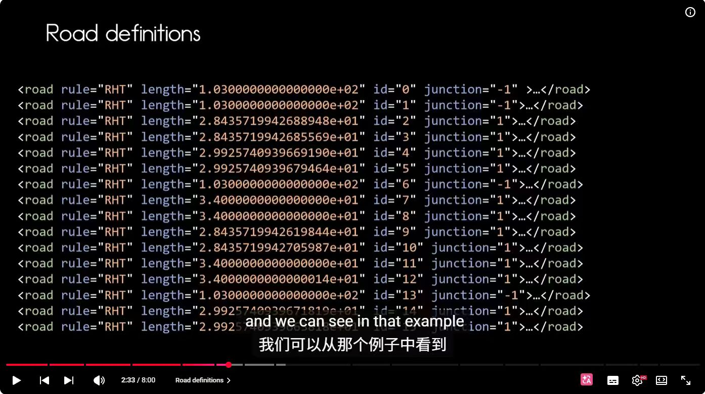
Q: 図のように、OpenDRIVE 道路網 XML 内の Road リストはどのように組織されていますか？
A: 図は、OpenDRIVE ファイルにおける道路網定義の典型的なリスト構造です。
1. 属性の概観: 各 <road> ノードの id (識別子)、length (科学的表記法、例えば 1.03e+02)、および junction (所属する交差点 ID) 属性を明確にリストアップしています。
2. 道路網の規模: このリストを通じて、道路網がどれほど複雑であるかを直感的に評価できます。例えば junction="-1" は独立道路、junction="1" は複数の道路が同じ交差点トポロジーに属していることを表しています。
3. 構築の検証: このリスト構造は、開発者が道路網の完全性を検証し、各 Road ノードの幾何学的属性およびそのトポロジー的所属を確認するためのキーとなるビューであり、後の道路網論理解析の基盤を打ち立てています。
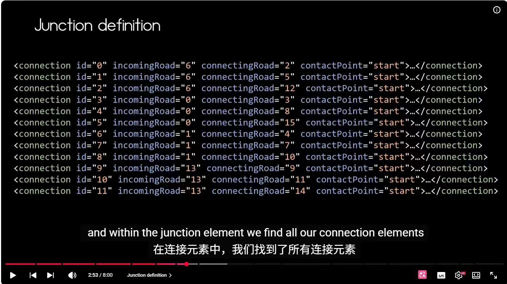
Q: Junction 要素内部で、どのように複雑な交差点接続論理を定義しますか？
A: 図のように、OpenDRIVE は一連の <connection> タグを通じて、交差点内部の完全なトポロジーを定義します。
1. 接続マッピング: 各 <connection> 要素は、incomingRoad (進入路) から connectingRoad (接続路) へのマッピング関係を明確にし、contactPoint="start" というラベルを付けて接続点位置を指定しています。
2. 交差点の規模: id="0" から id="11" までの複数の接続を列挙することで、多方向交差点の分岐・合流関係を定義するだけでなく、道路が交差点内でどのような空間経路で流れるかを明確に記述しています。
3. 構築の価値: このような構造化された定義は、十字交差点のような複雑な幾何学的トポロジーを扱う鍵であり、シミュレーションエンジンが事前に定義された接続順序に従って、交差点内での車両の走行軌跡や通行権分配論理を正確に計算できることを保証しています。
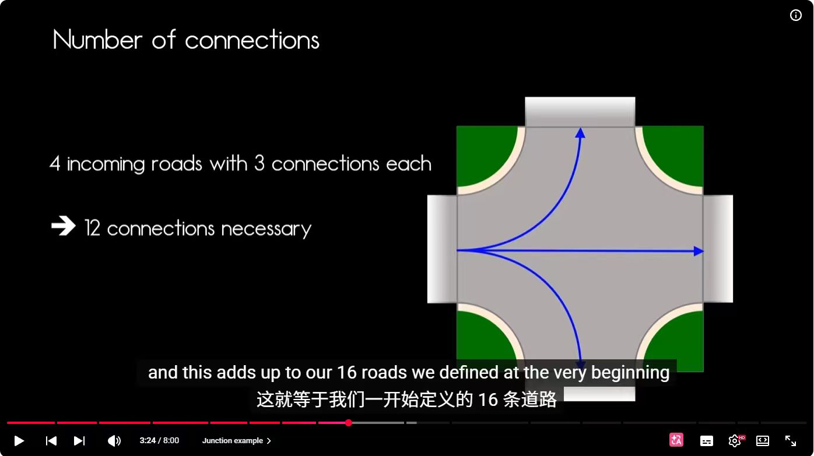
Q: なぜ十字交差点では 12 の接続 (Connections) を定義する必要があるのですか？
A: 図に示すように、十字交差点モデルにおいて接続数を計算する論理は非常に明確です。
1. 接続ノード: 4 つの進入路 (Incoming Roads) が存在する場合、それぞれの道路には 3 つの可能な方向転換（左折、直進、右折）があるため、合計で $4 \times 3 = 12$ の接続 (Connections) を定義する必要があります。
2. 道路総数: 初めに定義された 4 つの主要道路を加えると、交差点モデル全体で合計 16 の道路定義が含まれることになります。
3. 構築の意義: このような明示的な接続カウント法により、シミュレーションエンジンが交差点内の交通流の可能性をすべて網羅できることを保証し、完全な通行権制御と経路計画を構築するための不可欠なステップとなります。
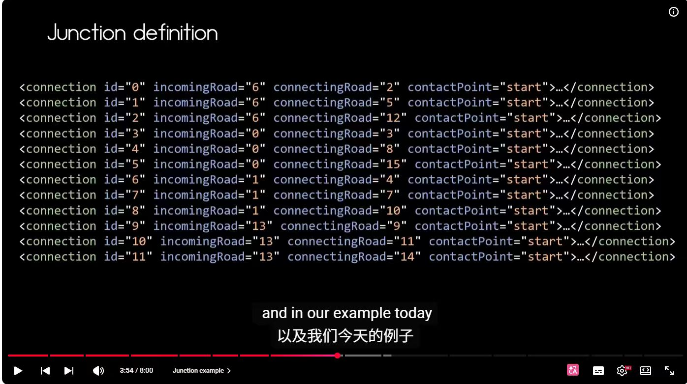
Q: 図のように、OpenDRIVE 交差点接続定義の重要な属性は何ですか？
A: 図のように、Junction 内部の各 <connection> 定義は高度に標準化されています。
1. 接続マッピング: incomingRoad 属性を通じて進入路を指し、connectingRoad 属性を通じて接続路を指すことで、交差点の方向転換トポロジーを明確に構築しています。
2. 接続点配置: contactPoint="start" は接続点が進入路または接続路の始点にあることを明確にし、物理空間上でのトポロジー接続の一意なマッチングを保証します。
3. 完全なカバレッジ: 図の例は id="0" から id="11" までの 12 の接続定義を完全に提示しており、交差点におけるすべての可能な転換経路（左折、直進、右折）に対する体系的な記述を体現しています。
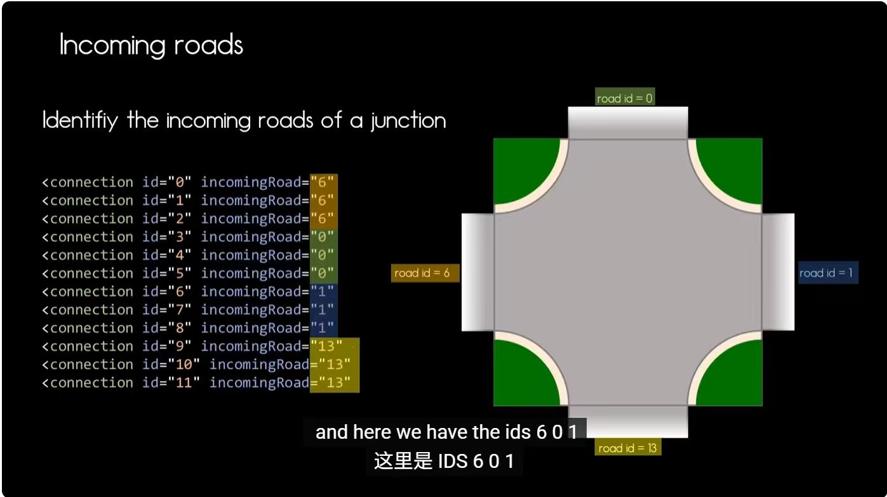
Q: 交差点における Incoming Roads をどのように正確に識別し、定義しますか？
A: 図のように、交差点トポロジーにおいて Incoming Roads は、交差点にアクセスするすべての交通流入先を識別します。
1. 交差点構造: 典型的な十字交差点モデルには、Road ID が 0, 6, 1, 13 である 4 つの主要な進入路が含まれています。
2. 接続マッピング: XML 内の <connection> リストは、incomingRoad 属性を通じて各接続経路のソースを正確に記録しています。例えば、Connection 0-2 は Incoming Road 6 に対応し、Connection 3-5 は Road 0 に対応する、といった具合です。
3. 重要な論理: この物理道路 ID を交差点接続定義に明示的にマッピングする論理は、シミュレーションシステムが交差点の交通量ソースを識別し、転換論理を設定し、精緻な通行権制御を行うための核心的な基盤です。
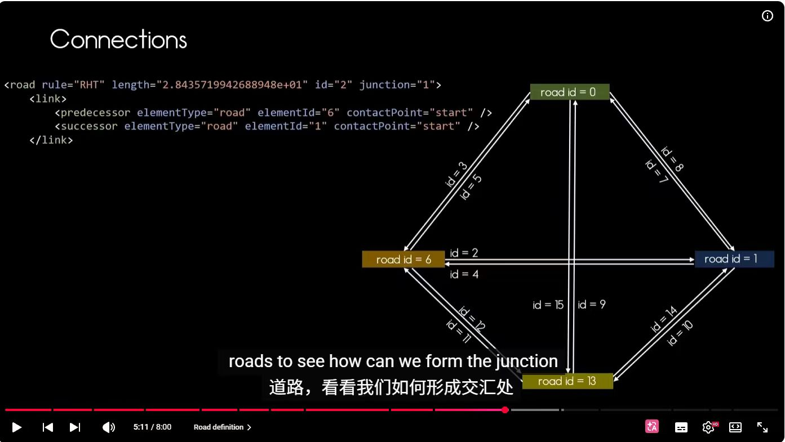
Q: 図のように、典型的な交差点接続 (Connection) 内部構造はどのようになっていますか？
A: 図のように、road id = 2 を例として、交差点内におけるその論理的接続関係を提示しています。
1. 接続トポロジー: このロードセグメント (id=2) は <link> 要素を通じて、前駆 (predecessor) が road id = 6、後継 (successor) が road id = 1 であることを明確に定義しています。
2. 接続属性: elementType="road" および contactPoint="start" を通じて、アクセス路から主要路へ、そして接続路へと流れる物理空間および論理トポロジー上の流れのマッピングを完全に記述しています。
3. 構築の価値: この ID マッピングに基づいた直列接続方式は、OpenDRIVE が基礎道路セグメントから効率的に複雑な交差点交通網を構築できるための鍵であり、シミュレーション環境における車両の自動ルート探索に明確な物理的・論理的ガイダンスを提供します。
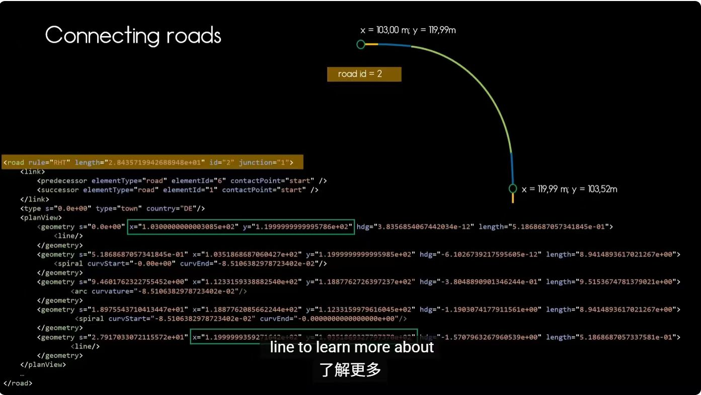
Q: 図に示すように、OpenDRIVE 接続道路 (Road 2) はどのような幾何要素シーケンスで構成されていますか？
A: 図に示すように、`road id = 2` は典型的な滑らかなカーブ幾何学的構築シーケンスを示しています。
1. シーケンス論理: line -> spiral -> arc -> spiral -> line。この組み合わせは、始点 (103, 120) から終点 (120, 104) まで滑らかに伸びる接続軌跡を正確に描写しています。
2. 幾何学的パラメータ: 各要素は始点位置、方向角、長さが定義されており、各セグメントが空間内で連続しているだけでなく、切線方向 (Heading) も厳格に一致していることを保証しています。
3. 構築の価値: この例は、基本幾何要素の強力な組み合わせ能力を示すだけでなく、交差点を「接続」する際の精緻な記述能力を体現しており、複雑な交差点での通行権分配の下で車両に精密な経路ガイダンスを提供します。
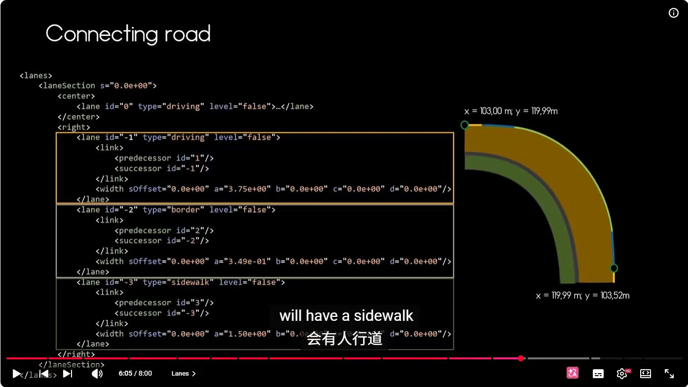
Q: 図のように、典型的な Connecting Road にはどのような車道コンポーネントが含まれていますか？
A: この図は、Connecting Road の内部車道論理の構築を詳細に示しています。
1. Center Lane (id=0): 行車道 (driving type)。基準点として機能。
2. Right Lane Group (右側車線グループ):
- id="-1": 行車道 (driving type)。幅は 3.75m。
- id="-2": 境界 (border type)。物理的な縁石として機能。
- id="-3": 歩道 (sidewalk type)。幅は 1.5m。
3. 構築の価値: この XML に基づく階層化定義（トポロジー接続 link と幾何幅 width を含む）は、路面の幾何学を正確に記述するだけでなく、歩道を含む都市の複雑な道路環境を成功裏にシミュレーションしており、シミュレーションの高忠実度を実現する鍵となります。
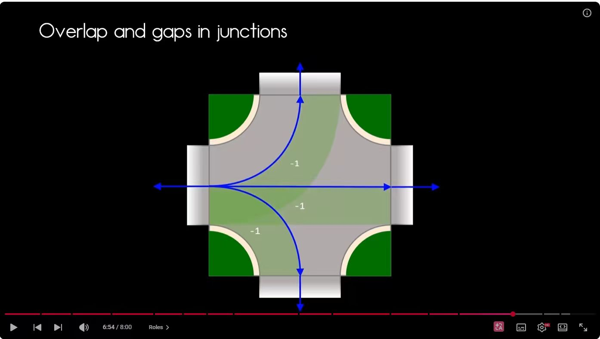
Q: 図のように、交差点モデリングにおいて、「重なり (Overlap)」と「隙間 (Gaps)」をどのように識別・回避しますか？
A: この図は、交差点モデリングにおいて最も一般的である2つの幾何学的欠陥を深く示しています。
1. 隙間 (Gaps): 図の薄い領域に示すように、道路接続セグメント間が幾何学的に閉合していない場合、論理的な断点が生じ、シミュレーション内で車両力学的な分断を招きます。
2. 重なり (Overlaps): 図の濃い重なり領域に示すように、過剰な幾何学的なカバレッジは、レンダリングにおける Z-fighting や衝突論理処理のエラーを引き起こします。
3. 構築の規範: OpenDRIVE は、交差点内の各接続セグメントが精密な幾何学的トポロジーの閉合を実現することを要求しています。開発者は基準線と切線方向 (Heading) を正確に計算することで、接続点が数学的に厳密に一致することを保証し、継ぎ目のないシミュレーション道路網を構築する必要があります。
Q: 図のように、十字交差点の中心でなぜ「未定義領域 (Undefined area)」が発生するのですか？
A: この図は、交差点モデリングにおいてしばしば無視される幾何学的な空隙を深く示しています。
1. 定義の欠如: 4 つの主要道路 (Road ID 0, 1, 6, 13) と交差点内部の接続道路セグメントが、交差点の中心領域を完全にカバーできていない場合、幾何学トポロジー上で「未定義」な領域が生じます。
2. シミュレーションの帰結: シミュレーションエンジンにおいて、車両がこの領域を通過する際に物理的な路面定義が欠如しているために、走行論理が制御不能になったり、衝突検知が無効になったり、レンダリングエラーが発生したりします。
3. 構築の注意: これは交差点モデリングにおいて厳格に回避すべき「空白区」です。開発者は接続道路を追加したり、接続円弧を正確に計算したり、道路境界を拡張したりすることで、交差点内部が 100% の幾何学的トポロジーでカバーされ、かつ滑らかに衔え込まれていることを保証する必要があります。
Q: 図に示すように、交差点中心の道路接続によって生じる隙間 (Gaps) 問題をどのように解決しますか？
A: この図は、十字交差点内部の接続路が方向転換を処理する際に生じる幾何学的な空隙を示しています。
1. 原因分析: 接続路（図中のカラークロスストリップ）が交差点中心領域を正確にカバーできていない場合、論理的な断層が生じます。
2. 解決戦略: 接続路の幾何学的定義を延長するか、専用の埋め込み道路セグメント (Filler Roads) を追加することで、あらゆる可能な転換軌跡（左折円弧、直進経路など）が幾何学的トポロジー上で完璧に閉合されていることを保証します。
3. 構築の目標: このようなきめ細かい接続路幾何学修正を通じて、道路網における「死角」を排除し、論理的に連続的で物理的に閉合された交差点モデルを構築します。これはシミュレーション道路網の安定性を向上させるための鍵です。
Q: 図のように、OpenDRIVE における標高 (Elevation) の物理的意味は何ですか？
A: この図は、山岳の複雑な環境における OpenDRIVE の標高モデリング能力を示しています。
1. 3次元空間表現: 自動運転シミュレーションにおいて、路面は平坦な2次元平面ではなく、複雑な標高変化を持つ3次元トポロジー構造です。
2. 路面の凹凸記述: 標高モデリングを通じて、システムは道路が地形に従って発生する上り坂や下り坂の変化を正確にシミュレーションできます。これは車両の力学的挙動（登坂能力、位置エネルギー変化など）を正確に計算するために不可欠です。
3. 現実環境の再現: OpenDRIVE は、高標高断面 (Elevation Profile) を通じて道路を現実の地勢の上に展開しており、高忠実度な自動運転シミュレーション道路網を実現するための核となる基盤です。